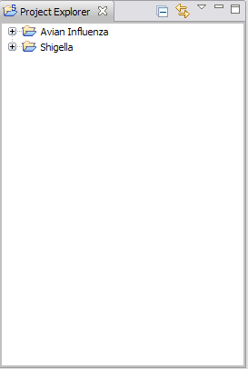

The STEM Project Explorer View displays the STEM projects and their contents. A project is a collection of Decorators, Graphs, Models, Scenarios and Sequencers that are typically focused on one particular simulation area, for instance, the spread of a particular disease.
Right-clicking on items in the view will bring up a pop-up context menu.
